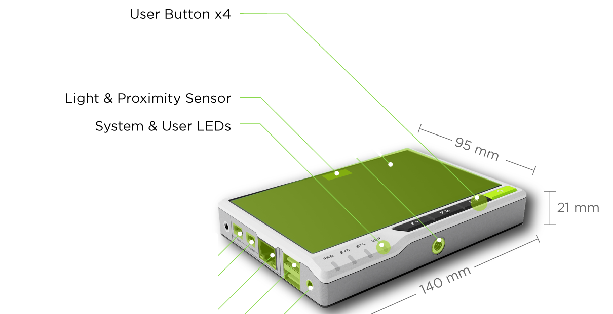
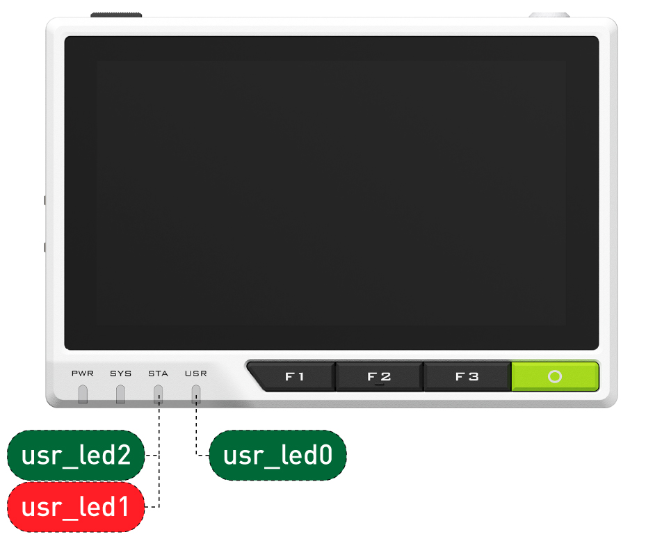
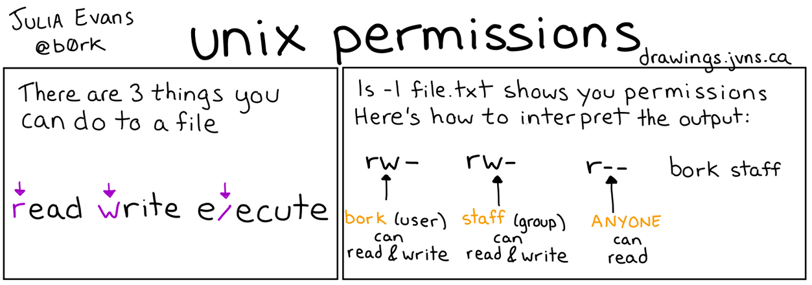

reTerminal Sensors
Installing initial reTerminal packages. Reading and controlling the reTerminal hardware interfaces, e.g. LEDs, light sensor, screen backlight, etc.
Lab 1 Review
After Lab 1, you have taken the following steps:
- Install the Raspberry Pi OS image.
- disassemble, flip the memory switch and use
usbboot/rpibootscript to prepare internal memory for firmware flash. - use Raspberry Pi Imager to flash new image 64bit “Bookworm” Raspberry OS with chosen username/password and SSH enabled
- fix the “black screen” issue by installing the latest seeed overlay drivers
- Update system packages
- update system repositories with
sudo apt updateandsudo apt upgrade - install kernel headers with
sudo apt install raspberrypi-kernel-headers - install
gitanddocker, deploy simple Python webserver docker container
- Set up remote connection interfaces
- determine your assigned IP address on the class LAN
- determine your device MAC address
- enable VNC interface
It’s time to take a deeper look at the hardware and software our reTerminal offers.
Hardware
This section is adapted directly from the reTerminal wiki: “Getting Started with reTerminal”
The reTerminal is powered by a Raspberry Pi Compute Module 4 (CM4) which is a Quad-Core Cortex-A72 CPU running at 1.5GHz and a 5-inch IPS capacitive multi-touch screen with a resolution of 1280 x 720. It has sufficient amount of RAM (4GB) to perform multitasking and also has sufficient amount of eMMC storage (32GB) to install an operating system, enabling fast boot up times and smooth overall experience. It has wireless connectivity with dual-band 2.4GHz/5GHz Wi-Fi and Bluetooth 5.0 BLE.
reTerminal consists of a high-speed expansion interface and rich I/O for more expandability. This device has security features such as a cryptographic co-processor with secure hardware-based key storage. It also has built-in modules such as an accelerometer, light sensor and an RTC (Real-Time Clock). reTerminal has a Gigabit Ethernet Port for faster network connections and also has dual USB 2.0 Type-A ports. The 40-pin header on the reTerminal opens it for a wide range of IoT applications.
Firmware & Version
| Released Date | Pre-Installed OS | Pre-Installed STM32 Firmware | Board Version |
|---|---|---|---|
| 06/15/2021 | 2021-06-02-Raspbian(modified)-32-bit | V1.0 | v1.3 |
| 08/03/2021 | 2021-06-02-Raspbian(modified)-32-bit | V1.1 | v1.4 |
| 09/03/2021 | 2021-06-02-Raspbian(modified)-32-bit | V1.6 | v1.6 |
| 11/02/2021 | 2021-09-14-Raspbian(modified)-32-bit | V1.8 | v1.6 |
| Winter 2024 | What OS did we install in Lab 1? | V1.8 | v1.6 |
You can find a complete list of the reTerminal specifications here: reTerminal Specifications
Raspberry Pi OS and Debian
The Raspberry Pi OS (previously called Raspbian OS) used in the reTerminal is a variation of the Debian OS, with optimizations for the Raspberry Pi hardware.
Debian OS is one of the most commonly used Linux distributions, especially as the “base” for derivative distributions. There are over 100 derivatives of Debian, many of which are themselves very popular distributions. These include:
- Desktop distributions like Ubuntu, Linux Mint, elementaryOS;
- Special-purpose distributions Kali Linux and Backbox (penetration testing)
- Server/Hypervisor distributions like Proxmox, Ubuntu server,
- Many others, you can find a more complete list here
Debian-derived distributions share the following: - the .deb package format - the dpkg package manager and its frontend apt
For that reason, many of the commands and configuration for Raspberry Pi OS can be taken directly from Debian’s documentation.
Apt: Debian Package Manger
The command apt is the default package manager of Debian.
A package manager is a software tool responsible for automating the installation, removal, configuration and removal of computer programs.
Managing packages could technically be done manually, however, it is very time consuming and error prone: tracking package dependencies and compatibility with the current system.
Note: apt is a newer package manager API meant to replace the older API apt-get. However, they both accomplish the same. See Debian docs for details.
During Lab 1, you updated, upgraded and installed some packages in the Raspberry Pi OS using apt:
| Command | Description |
|---|---|
sudo apt update |
Update list of available packages |
sudo apt upgrade |
Upgrade the system by installing/upgrading packages |
Other commonly used commands, as seen from running apt --help:
| Command | Description |
|---|---|
apt list |
list packages based on package names |
apt search |
search in package descriptions |
apt show <package> |
show package details |
apt install <package> |
install packages |
apt reinstall <package> |
reinstall packages |
apt remove <package> |
remove packages |
apt autoremove |
Remove automatically all unused packages |
apt full-upgrade |
upgrade the system by removing/installing/upgrading packages |
apt edit-sources |
edit the source information file |
Note: documentation will often leave out sudo since the need to run sudo depends on the machine and the user.
In general, commands that read data (
apt list,apt search, etc.) will generally not requiresudo, since most folderst thataptwill touch are universally readable.
aptcommands that write data (apt install, etc.) to a folder not owned by the current user – which is most folders outside of/home/username, but particularly common package install locations like/usr,/bin, etc. – these commands will requiresudoto gain the required write permission
Reading sensor data in Linux
This section is based on the official documentation for the reTerminal: Hardware and Interfaces Usage
In Linux, everything is a file stream that can be read and/or written to.
For example, keyboard inputs and communication over web-sockets are all read as a file streams.
The reTerminal has 3 programmable LED’s and a light sensor that can be controlled like a regular file.

Sensors
Programmable LEDs
There are 3 programmable LEDs in the reTerminal:
- STA light can be turned on as red or green.
- USR light can only be turned on as green.

The lights can be controlled at the OS level by editing files in the /sys/class/leds/ directory. Use ls -al to list the files in this directory:
username@hostname:/sys/class/leds/usr_led0 $ ls -al
total 0
drwxr-xr-x 3 root root 0 Jan 25 20:33 .
drwxr-xr-x 8 root root 0 Jan 25 20:33 ..
-rw-r--r-- 1 root root 4096 Jan 26 22:02 brightness 
Unix File Permissions, Julia Evans.
The brightness file inide the usr_led0 controls the brightness of LED0. But, because only root has write permissions to this file, we will likely run into permissions errors if we try to edit the value directly:
$ nano /sys/class/leds/usr_led0
Permission denied
$ echo 255 > /sys/class/leds/usr_led0
Permission denied
$ sudo echo 255 > /sys/class/leds/usr_led0There are a few possible approaches to this problem:
Use sudo + text-editor
Use sudo + su
Enable root account privileges (take the identity of the root user)
$ sudo suYour shell should now display root@hostname:~#
Turn on the LED with maximum brightness
# echo 255 > brightnessTurn off the LED
# echo 0 > brightnessSimilarly, you can control usr_led1 and usr_led2 and even the buzzer on /sys/class/leds/usr_buzzer ### Use sudo + tee
Note: We’ll run the next command as root because the file we want to write belongs the system (root user, rather than to the user pi.
Luminosity Sensor
The digital light sensor can read the surrounding light levels.
- Enter the following directory
cd /sys/bus/iio/devices/iio:device0- Read the following file to obtain the light intensity value in Lux
cat in_illuminance_input Output:
pi@raspberrypi:/sys/bus/iio/devices/iio:device0 $ cat in_illuminance_input
2719Note: We don’t need to be root to read this file. Its permissions are set to let all users read it, even-though it belongs to the root user:
rw-r--r-- 1 root root 4096 Jan 30 22:16 in_illuminance_inputPython Library for reTerminal
Seeed Studio provided a python library to access most of the sensors and actuators of the reTerminal.
Install the library seeed-python-reterminal (see official Github repo) using pip:
sudo pip3 install seeed-python-reterminalInstalling pip libraries as root is not recommended.
However, this library needs to access system files (see previous section) and will have to be executed as root.
There are workarounds, however, for simplicity we will install this package as root. See section ModuleNotFoundError below for more context.
Now you can import it to a test script (eg. buzz.py)
import seeed_python_reterminal.core as rt
import time
print("BUZZER ON")
rt.buzzer = True
time.sleep(1)
print("BUZZER OFF")
rt.buzzer = FalseThis will sound the buzzer of the reTerminal for 1 second.
To run the script:
sudo python3 buzz.pyAlternatively, first elevate your shell, then execute the script normally:
pi@raspberrypi:~ $ sudo -i
root@raspberrypi:~# python3 buzz.pyNote: this library is simply a wrapper to the OS operations we did in the previous section. Some files need to be accessed by python as root. In this case, it is necessary to run
sudo -ibefore running the python script.
See the official seeed-python-reterminal Github repo for API reference on how to control:
- LED’s
- Accelerometer
- Programmable Buttons
- Light Sensor (requires manual updating)
ModuleNotFoundError
When trying to import the seeed-python-reterminal library, you might get the following error:
ModuleNotFoundError: No module named 'seeed_python_reterminal'The python interpreter is not able to find the module even though it is installed.
You can run the checks described below.
Check library location
Check the location of where the module was installed with pip3 show <module-name>:
pi@raspberrypi:~ $ pip3 show seeed-python-reterminal
Name: seeed-python-reterminal
Version: 0.2
Summary: seeed-python-reterminal
Home-page: https://github.com/Seeed-Studio/Seeed_Python_ReTerminal
Author: Takashi Matsuoka (matsujirushi)
Author-email: matsujirushi@live.jp
License: MIT License
Location: /usr/local/lib/python3.7/dist-packages # Library location
Requires: evdev
Required-by: The library is installed at: Location: /usr/local/lib/python3.7/dist-packages
Check python’s library paths
Similarly to Linux, there are environmental variables that determine where python will look for installed modules/libraries.
See the paths where python is looking for libraries with sys.path.
pi@raspberrypi:~ $ python3
>>> import sys # Exposes configuration used by the python interpreter.
>>> sys.path # Lists all paths where interpreter looks for modules.
[
'',
'/usr/lib/python37.zip',
'/usr/lib/python3.7',
'/usr/lib/python3.7/lib-dynload',
'/home/pi/.local/lib/python3.7/site-packages',
'/usr/local/lib/python3.7/dist-packages',
'/usr/lib/python3/dist-packages'
]If the output of pip3 show seeed-python-reterminal is not in this list, python will not find it when you import it.
Note: the python shell above was started as the user
pi. If you start python as root,sys.pathmight have different paths.
Below, python was started as root:
pi@raspberrypi:~ $ sudo -i
root@raspberrypi:~# python3
>>> import sys
>>> sys.path
[
'',
'/usr/lib/python37.zip',
'/usr/lib/python3.7',
'/usr/lib/python3.7/lib-dynload',
'/usr/local/lib/python3.7/dist-packages',
'/usr/lib/python3/dist-packages'
]Note that the user pi does not have permission to add content inside /usr. Thus, all pip installations as the regular user go into /home/pi/.local/lib/python3.7/site-packages.
Conclusion: if you install a python library as root, it might go to a different directory compared to installing it as the regular user.
This is the main reason why we chose to install the seeed-python-reterminal as root, rather than the regular user pi.
Making user’s library available to root (optional)
If you would like to make a library installed as the user pi available when running the script as root, you will need to export an environmental variable named PYTHONPATH pointing to the library location.
For example, assuming that a library installed under the user pi is located in /home/pi/.local/lib/python3.7/site-packages, do the following:
# Elevate the shell to the root user
pi@raspberrypi:~ $ sudo -i
root@raspberrypi:~#
# Export the PYTHONPATH environment variable
root@raspberrypi:~# export PYTHONPATH="/home/pi/.local/lib/python3.7/site-packages"
# Start python as root and run the script that imports the library
root@raspberrypi:~# python3 my_script.py